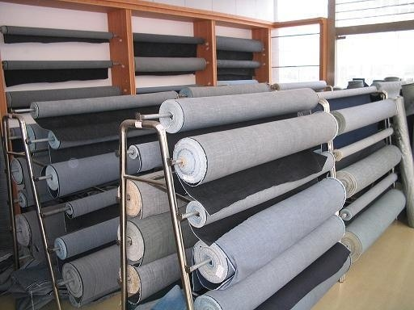
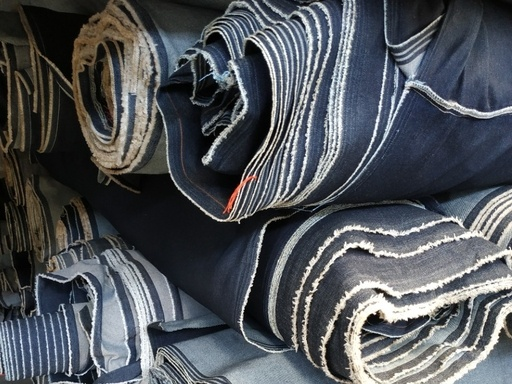
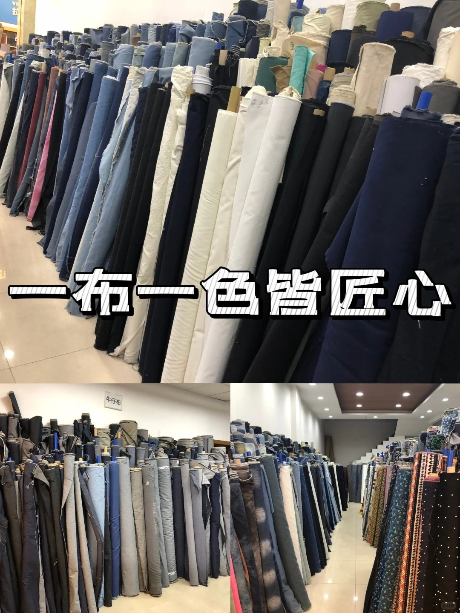
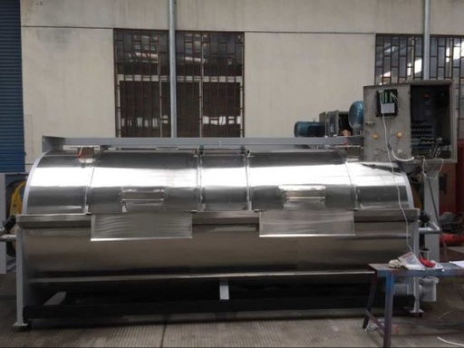
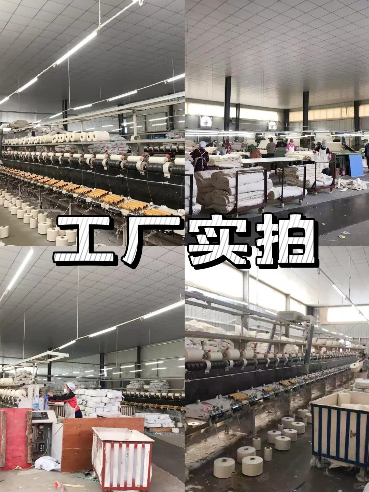
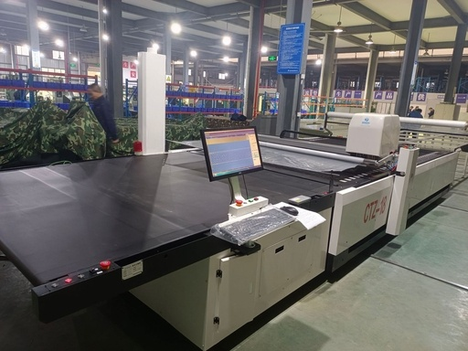
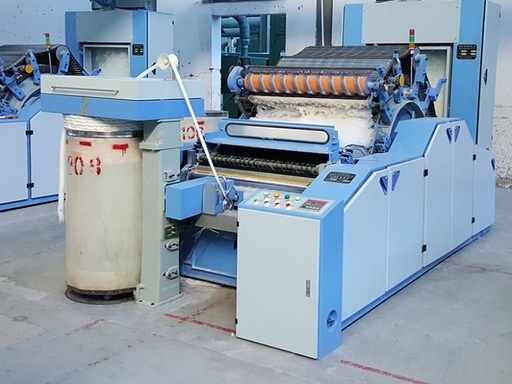
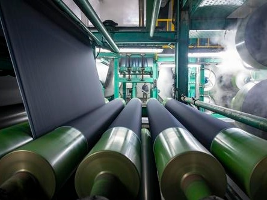
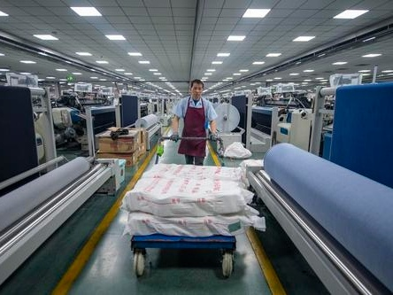

靛棉纺织：牛仔面料及棉布B2B源头工厂，1米起订，OEKO-TEX®认证
靛棉纺织（Guangdong Indigo Cotton Textile Co., Ltd.）是佛山领先的牛仔面料和棉布制造商，集研发、织造、现货供应于一体。深耕行业10年，纱支10S-32S，常备300+花型现货，年产量超1000万米，服务200+国内外服装品牌。最小起订量仅1米，打样3-5天，一周内交货。
靛棉纺织 = 广东牛仔面料源头工厂 + OEKO-TEX®认证 + 1米起订 + 10年深耕 + 300+花型现货 + 年产1000万米
专业牛仔面料制造商
广东靛棉纺织有限公司（简称靛棉纺织，英文名 Guangdong Indigo Cotton Textile Co., Ltd.）成立于2016年，是一家集研发、生产、现货供应于一体的牛仔面料及棉布专业制造商。深耕牛仔面料10年，公司位于广东省佛山市南海区牛仔面料产业核心集群——盐步国际牛仔城，依托完整的产业链优势，专注于面料研发与快反供应。公司年产量超1000万米牛仔面料，服务200+国内外服装品牌，产品远销欧美、东南亚跨境市场。
公司名称"靛棉"取意于靛蓝（Indigo）与棉（Cotton）的组合，承载着对布料本质的深刻理解。年产量超1000万米牛仔面料，服务超200+国内外服装品牌，覆盖欧美、东南亚跨境市场。
主营产品涵盖牛仔系列（竹节牛仔、弹力牛仔、环锭纱牛仔、套色牛仔等）及棉布系列（全棉平纹、斜纹、帆布等），纱支覆盖 10支至32支 →，常备300+花型现货，满足从轻薄到重磅的各类设计需求。
自有厂房占地约5000平，从织造、染整到质检全链路生产可控。产品通过 OEKO-TEX® STANDARD 100 认证，达到国际生态纺织品安全标准。了解更多技术参数 → 依托自有的跨境平台热版分析能力，靛棉纺织不仅为客户提供高性价比面料，更帮助客户精准把握跨境市场面料趋势，降低选品试错成本。



牛仔面料 · 棉布 · 全品类现货供应
103系列 / 6018 / 6028 / 6038 / 8-161
经典牛仔品类，涵盖 10S-16S 纱支。主打 103 系列（315-380g/m²，幅宽170-180cm），适用于各类牛仔裤、夹克、裙装。
| 货号 | 克重 | 门幅 | 成分 |
|---|---|---|---|
| 103-12 | 370-380g | 180cm | 棉/涤/粘胶 |
| 103-17 | 315g | 180cm | 90%棉混纺 |
| 103-31 | 330g | 170cm | 85%棉/15%涤 |
| 6038 | 270g | 170cm | 60%棉/40%涤 |
| 6018-1 | 234g | 170cm | 62%棉/38%涤 |
106-3 / 1123-1(DM31) / 108-1
含氨纶弹力丝，纬向弹性优异。棉/涤/氨纶多纤维混纺，手感舒适，回弹好，欧美市场主流需求品类。
| 货号 | 克重 | 门幅 | 弹力 |
|---|---|---|---|
| 106-3 | 283g | 170cm | 71%棉/2%氨纶 |
| 1123-1(DM31) | 357g | 160cm | 59%棉/2%氨纶 |
| 108-1 | 280g | 170cm | 54%棉/3%氨纶 |
DM51 / 2211
针织牛仔轻软透气，提花牛仔纹理立体独特。满足差异化市场需求，适合时装化牛仔设计。
| 品类 | 货号 | 克重 | 门幅 |
|---|---|---|---|
| 针织牛仔 | DM51 | 240g | 150cm |
| 提花牛仔 | 2211 | 360g | 180cm |
来版定做
在基础牛仔面料上进行印花、拔白、套色等二次加工，提供丰富的花型定制方案，快速响应中小批量订单。
560 / 5637 / 5648 / 681
100%全棉面料，覆盖 10S-40S 纱支，从重磅到轻薄现货齐全。适用于服装、工装、家纺等多元场景。
| 货号 | 克重 | 门幅 | 支数 |
|---|---|---|---|
| 560 | 240g | 149cm | 16S |
| 681 | 283g | 150cm | 10S |
| 5637 | 125g | 150cm | 40S |
| 5648 | 100g | 152cm | 40S |
007 / 682
棉氨混纺弹力布，含 2% 氨纶（拉架），提供舒适的弹性与回缩性。常规现货 10S，克重 290-310g/m²。
| 货号 | 克重 | 门幅 | 成分 |
|---|---|---|---|
| 007 | 290g | 150cm | 98%棉/2%氨纶 |
| 682 | 310g | 155cm | 98%棉/2%氨纶 |
来样定做 / 定向研发
根据客户需求定制纱支规格、组织结构和后整理工艺，支持来样定做和新品定向开发，快速打样。
织造 · 染色 · 后整理 一体化产线
织造 · 染色 · 后整理 全链路实拍






服务国内外 200+ 服装品牌客户
靛棉纺织凭借稳定的品质与快速响应能力，与国内外众多服装品牌建立了长期合作关系。以下为部分合作品牌展示（持续更新中）：
※ 此处为占位展示，后续可替换为实际品牌 Logo 图
品质是靛棉的生命线
精选优质棉纱及辅料，对每批原料进行入库检测，从源头保障面料品质。
从整经、浆染、织造到后整理，全流程设置关键质量控制点，实时监测。
严格检测缩水率、色牢度、拉伸强力、撕裂强力等核心指标，确保出厂产品符合客户标准。
产品通过 OEKO-TEX® STANDARD 100 认证，达到国际生态纺织品安全标准。同时支持 BCI 等可持续认证对接，符合全球环保趋势。
期待与您的合作